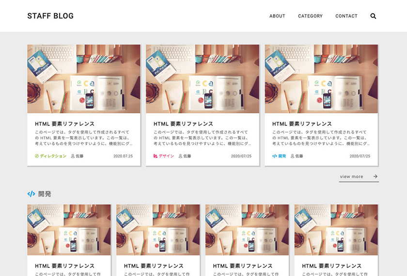

Webデザイン・コーディング
【概要】
Web制作会社が運営する技術ブログ。
企業内の担当者複数人で投稿する想定。
※架空の企業を想定したWebサイト。
【想定ユーザー】
・企業の事業内容に興味があるクライアント、求職者。
・特定のWebスキルなどについて調査のため検索しているユーザー。
【想定課題】
・企業の存在を業界にアピールし、新たな案件受注に繋げたい。
・ビジネス的な固い雰囲気ではなく、閲覧していて楽しめるようなカジュアルな雰囲気にしたい。
【ページ構成】
・トップページ
・記事詳細ページ
・Categoryページ(複数総括)
・各種Categoryページ
・プロフィールページ
・Contactページ
・Aboutページ
【デザイン方針】
カジュアルで遊び心がありつつ、まとまっていて読みやすい技術ブログ。
【デザインでの工夫】
・技術→スキルアップのイメージから、記事一覧のはカード型にし、それぞれが付箋に見えるようにデザインするという遊び心を入れることで、カジュアルで親しみやすい雰囲気にした。
・トップページは、全体の新着記事を上部に配置し、その下にそれぞれのカテゴリー別の新着記事を配置。
会社全体の新情報と、カテゴリー別の新情報を見つけることができ、目的に合わせた情報収集をしやすくした。
・カテゴリーごとのアイコン、文字色の変更で、遠目に見てもどの種類の記事であるかがわかりやすいようにした。
・CMSなどのカスタマイズがしやすいブロック型のデザイン。複数人での編集がしやすい設計を目指した。
担当領域：設計、デザイン、コーディング
制作ツール：Photoshop, VSCode
制作時間：18時間